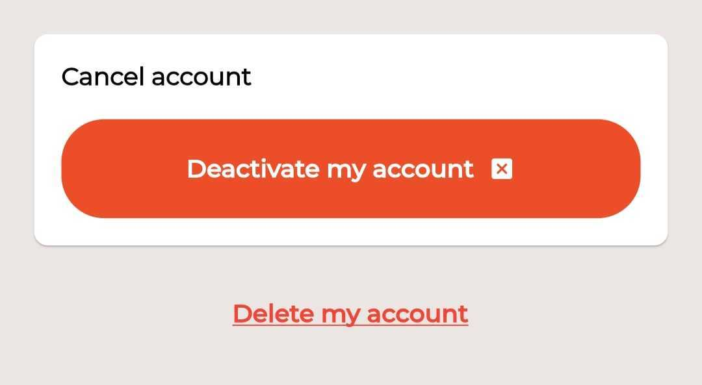

Por favor, complete el siguiente formulario para solicitar la eliminación de su cuenta y datos asociados desde la aplicación "Extra Works - Shifts en Miami". También, puede solicitar la eliminación de datos específicos enviando un mensaje a nuestro equipo de soporte.
También puedes eliminar tu cuenta directamente desde la aplicación. Sigue los pasos dentro de la app para eliminar tu cuenta de forma sencilla.
